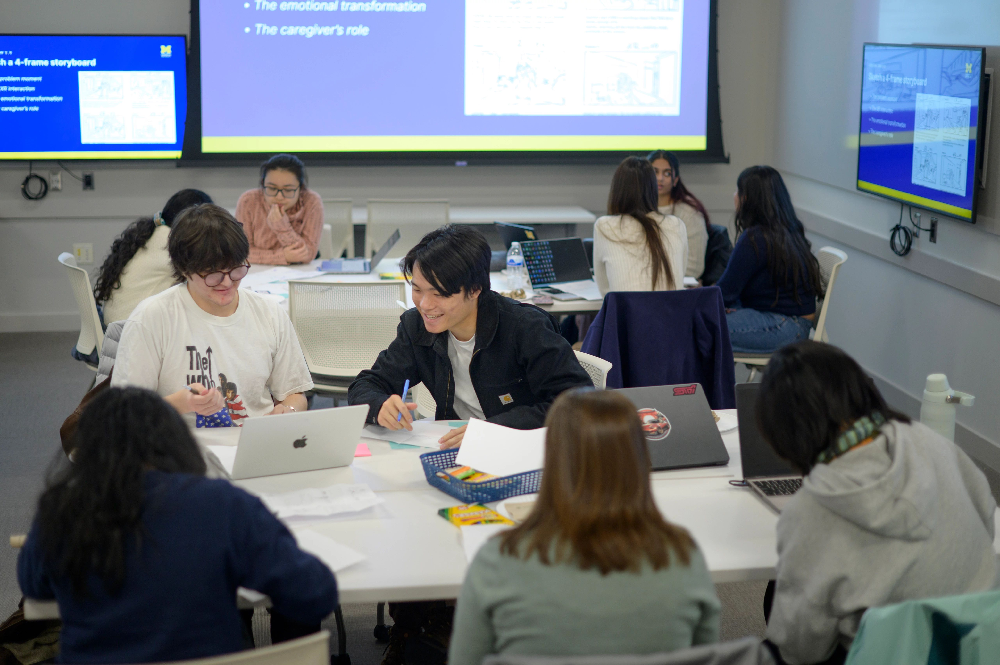

Launch Your Engaged Learning Journey
Transform your academic knowledge into real-world impact. Use this guide to understand your project context, evaluate team readiness, establish expectations, and begin a productive partnership.

Why the Work Starts Before the Project
Engaged learning at UMSI is fundamentally different from traditional classroom assignments. You are stepping out of controlled environments and into complex, unscripted ecosystems where technical solutions intersect with human lives, organizational cultures, and real community needs.
The initial phase of a project is rarely about jumping straight into execution—it is about building the foundation for ethical, sustainable engagement. Taking time to reflect on your own positionality, audit your team’s collective skills, and listen deeply to your partner’s goals prevents project failure down the line. When you ground your project in mutual respect, clear boundaries, and honest communication from Day 1, you transform a simple class deliverable into a reciprocal partnership that creates authentic value for everyone involved.
Phase 1: Preparing for the Experience
Before creating a solution, take time to understand the context, evaluate your team's readiness, and identify what you still need to learn.
Approach the Work as a Collaborative Learner
Before writing code, sketching wireframes, or analyzing data, consider how your identity and previous experiences influence the way you understand the project.
Your role is not to enter an organization or community as an outside expert who will fix a problem. Your role is to listen, ask questions, contribute your developing expertise, and work alongside people who understand their organization and community.
Focus & Objectives
- Social & Community Awareness: Examine personal identity, privilege, and community dynamics using civic engagement frameworks.
- Expectation & Role Alignment: Understand program requirements, project commitments, and leadership responsibilities.
- Initial Scoping: Assess organizational needs and evaluate initial project viability.
Featured Preparation Resources